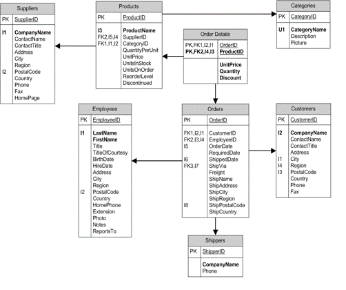
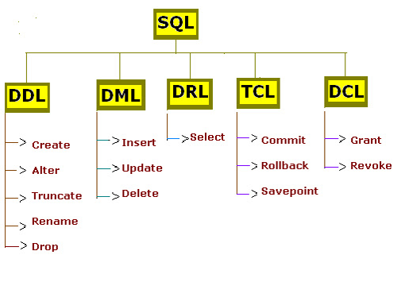
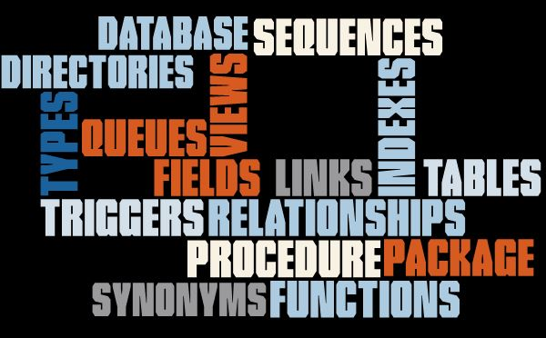
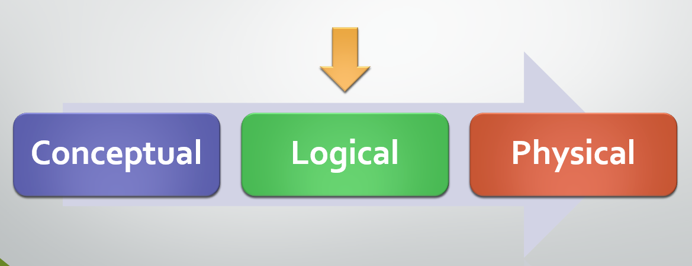

Data Schema

IINF 202 Intro to Data & Databases
NoSQL Squad : Andy Lai / Errol Nembhard / Hilton Wesley
Teacher : Kirk Leszczynski
What is database schema?
- Representation of a plan or theory
- Group or collection of database objects
- Connected to a single database user - Schema owner
- Possible create one or more schemas
- Facilitate the process of management, ownership, and distinctiveness of a database.
What is database schema?
A schema can contain as little as a single table and is not limited to the amount of objects it can contain, unless its restriction are set by a specific database implementation.

What is database schema?
Basically a blueprint and or layout that is used to organize data into tables. Usually described using Structured Query Language(SQL)
Specification :

Specification :
SQL Code
History - Conclusion:
- Database Schema – Entity Relationship by Peter Chen.
- It’s an essential task for better understand the database and its elements before creating it physically.
Lessons learned:
Andy: “I've learn the importance of Data Schema in a Database and how to add a table to a new schema and confirm the change. ”
Errol: “I've learn that a schema can be seen as a container of objects and how to create a database schema .”
Hilton: “ I learned that the schema is not only a simple blueprint with tables and indexes, it includes a bunch of essential elements in Database Design. I also learn how doing forward engineering with a data schema. .”
References :
Database schema. (2014). Retrieved from http://www.youtube.com/watch?v=gaZQBErbAoM&feature=youtube_gdata_player Schema. (n.d.). Retrieved March 20, 2015, from http://databases.about.com/cs/specificproducts/g/schema.htm Structured Query Language. (n.d.). Retrieved March 20, 2015, from http://databases.about.com/cs/administration/g/sql.htm Plew, R., & Stephens, R. (n.d.). What Is a Schema? In Sams Teach Yourself SQL in 24 Hours. Retrieved from http://www.informit.com/library/content.aspx?b=STY_Sql_24hours&seqNum=25
Useful Links
-
Our presentation:
- http://bitly.com/nosqlsquad MySql Workbench :
- http://dev.mysql.com/downloads/workbench/